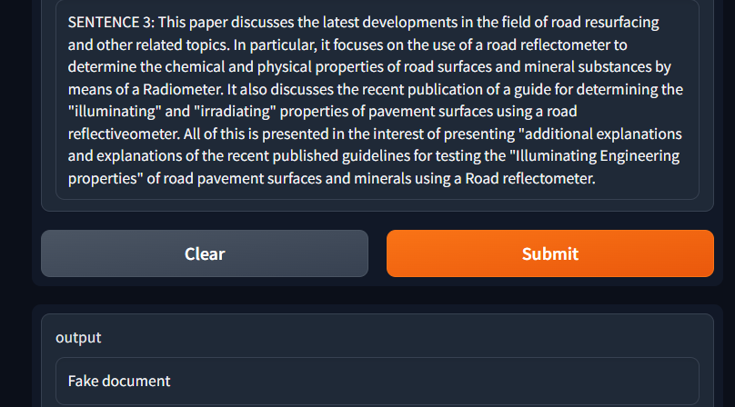

This project aims to develop a Natural Language Processing (NLP) system to determine the authenticity of academic papers. With the increasing prevalence of fraudulent and deceptive scholarly publications, it is crucial to establish methods for identifying fake papers.
Languages Used
Python
Tools Used
pandas, Spacy, tensorflow, scikit-learn, Numpy, Pandas, gradio
Description
Write a brief description about your project here. Explain its purpose, features, and any key findings or results. Provide an overview of the problem you solved, the approach you took, and the impact of your project.